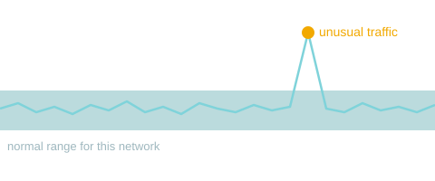
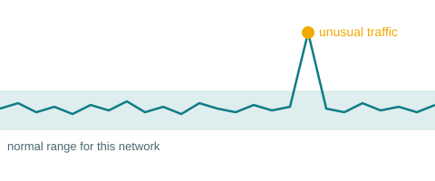

A lightweight AI intrusion detection system that learns how a Wi-Fi local area network normally behaves, then alerts the administrator when a device or traffic pattern does not fit.
View sample dashboard Read the concept
Three steps from raw traffic to a useful alert.
Passively collects LAN traffic and extracts packet rates, packet sizes, protocol mix and MAC/IP activity.
Builds a baseline of normal traffic and known device behavior with machine learning.
Flags anomalies and unauthorized devices and shows them to the administrator on a dashboard.

Firewalls apply fixed rules and signature-based tools miss new attacks. Small networks rarely have a tool that compares current activity with what is normal for that specific network.
A host probes other devices for open ports.
A device forges ARP replies to intercept traffic.
Traffic is flooded to disrupt a service.
An unknown device joins the Wi-Fi network.
Results are measured by
AccuracyPrecisionRecallF1-scoreFalse-positive rateProcessing overheadObjectives, scope, related literature and references are all here.
About the studyRelated literature